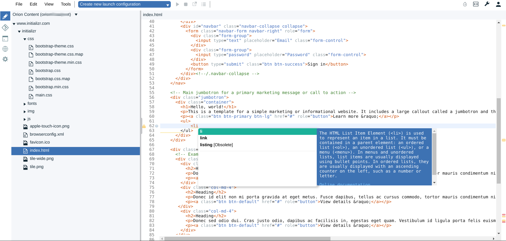
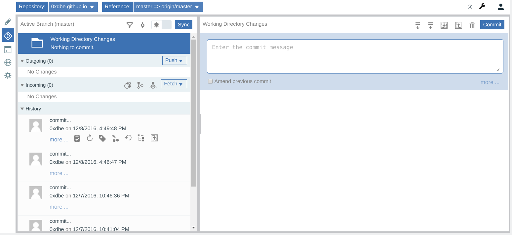
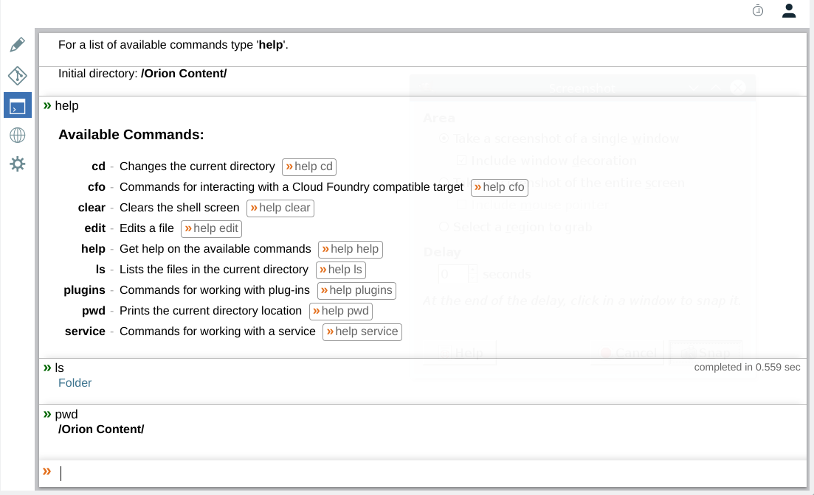

Eclipse Orion
February 15th, 2017
By Didier BERNAUDEAU
View online at https://git.io/vDPMP
Keyboard Shortcuts
| Full Screen |
F |
| Next Slide |
Space bar |
| Slide Notes |
S |
| Thumbnail View |
Esc |
Eclipse Cloud Development
Developing for and in the cloud
- Che
- Dirigible
- Eclipse tools for Cloud Foundry
- Orion
- Flux
Orion
Browser-based IDE (Integrated Development Environment)
|
Java |
Node |
| Users |
multiple |
single or multiple |
| Login API (/login) |
✔ |
✔ |
| File operations (/file) |
✔ |
✔ |
| Import zip/HTTP/SFTP (/import) |
✔ |
✔ |
| Export zip/SFTP (/export) |
✔ |
✔ |
| Import SFTP (/import) |
✔ |
|
| Export SFTP (/export) |
✔ |
|
| Persistent user preferences (/prefs) |
✔ |
✔ |
| Git (/gitapi) |
✔ |
✔ |
| Deploy to Cloud Foundry (/cfapi) |
✔ |
|
| Sites (/sites) |
✔ |
✔ |
| Long running tasks (/task) |
✔ |
✔ |
| User API (/users) |
✔ |
† |
† Orion Node server supports these features in multi-user mode only.
Editor module

Git module

Shell module

Eclipse Orion is embedded in
- Eclipse Che
- Google Cloud Shell
- Jazz Hub (Bluemix)
- Fabric8 (RedHat)
Orion can be embedded in another site
just like any other web content